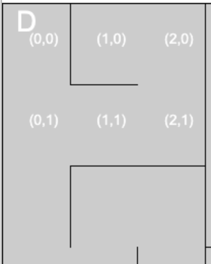

TP Python4 POO
Projet labyrinthe
Principe
Vous allez programmer un jeu de parcours d’un labyrinthe, case après case, en partant du repère D. Le joueur devra cliquer dans une case adjacente à celle de sa position, selon les ouvertures possible.
Le jeu fournit un bouton retour en arrière:
Celui-ci permet de retirer la dernière case du parcours du joueur, c’est à dire, …revenir en arrière d’une case.
Le parcours du joueur sera donc stocké dans une Pile, qui sera définie à partir de la classe Pile.
Voici le résultat attendu: https://trinket.io/embed/python/26f37880fa
Interface graphique
L’interface graphique est fournie par la librairie Processing. Cette librairie apporte des fonctions utiles pour dessiner dans la fenêtre graphique, mais aussi interragir: On pourra ainsi cliquer dans les cases du labyrinthe, et avoir en retour les coordonnées en pixel, avec pg.mouse.x et pg.mouse.y. La fenêtre graphique est automatiquement mise à jour. Il faudra mettre dans une fonction draw toutes les instructions de tracé. Et finir le programme par l’instruction pg.run().
La partie graphique du jeu est programmée dans le fichier laby.py. Celui-ci contient la classe Laby qui offre les méthodes de classe __init__, contour, case_2_xy, et x,y_2_case
__init__qui prend en paramètres les dimensions du labyrinthe: largeur, hauteur, et la listemurs.contour: (sans paramètre) qui trace les murs du labyrinthe dans la fenêtre graphiquecase_2_xy: de paramètrescase_xetcase_y, les coordonnées d’une case du labyrinthe. Retourne les coordonnées en pixels du centre de la case en fonction de ses coordonnées.x,y_2_case: de paramètres x,y (en pixels) et retourne les valeurscase_x,case_y. Cette fonction fait l’inverse de la précédente.
La coordonnée de la case départ vaut par exemple (0,0), celle du dessous, (0,1),… comme illustré sur l’image suivante:

repérage des cases du labyrinthe
Ainsi, lorsque l’on clique dans une case du labyrinthe: les fonctions pg.mouse.x et pg.mouse.y renvoient la position en pixels du clic dans la fenêtre graphique. Si l’on souhaite connaitre la coordonnée de case correspondante, on utilisera la fonction xy_2_case.
Supposons que l’instance de classe Laby soit mon_laby, on fait:
Travail pratique
Les instances de classes seront:
mon_labypour l’objet labyrinthe (ligne 38)mon_parcourspour la pile des cases empruntées. (ligne 29)
L’editeur se situe à la page https://trinket.io/embed/python/26f37880fa
Programmer la classe Pile
A vous de joueur:
activité 1: compléter le script de la classe
Pileavec les fonctions prévues par son interface:push,pop, ethead. Ces méthodes ont été vues en cours.
Programmation du jeu
A vous de joueur:
activité 2: Dans la fonction
mousePressed:
1. affecter à une variable
choixles coordonnées de cases retournées par la methodedirectionde l’objetmon_laby. Cette méthode prend en paramètre le dernier élément de la pile des cases visitées:mon_parcours.head():
Pour une case donnée, choix est la liste des cases accessibles, par exemple, lorsque l’on se trouve en (0,1), la liste choix contient: [(1,1), (0,2)], montrant que l’on peut aller vers l’Est (1,1), et vers le Sud (0,2).
2. affecter aux variables
colonne, ligneles coordonnées de cases retournées par la méthodexy_2_casede l’objetmon_laby. Mettre en paramètrepg.mouse.x,pg.mouse.y.
3. ajouter une instruction conditionnelle pour ajouter la case cliquée (colonne,ligne):
si le tuple (colonne,ligne) est dans la liste
choix, et s’il ne fait pas partie des cases déjà parcourues (not mon_parcours.include((colonne,ligne))), alors ajouter (push) le tuple dansmon_parcours.
4. ajouter une instruction conditionnelle pour retirer la dernière case lorsque l’on clique sur Retour:
Ce bloc conditionnel devra contenir une nouvelle instruction conditionnelle, qui retire le dernier élément de
mon_parcourssi celui-ci contient plus d’un élément (on ne veut pas retirer la premiere case (0,0). Utiliser la méthode de classePileappeléepop().
Testez alors votre jeu. Vérifiez que vous pouvez bien revenir en arrière lorsque vous prenez une mauvaise direction…
Extension du TP: projet pour term NSI
- Programmez une première méthode de résolution du labyrinthe par l’ordinateur, en utilisant la structure de données en pile. On pourra adapter la méthode de parcours d’un graphe en largeur ou bien en profondeur. La pile permettra de revenir en arrière dans l’exploration du labyrinthe.
- Le jeu pourrait proposer plusieurs labyrinthes. Et comparer la résolution du joueur avec celle de l’ordinateur.
- On peut programmer plusieurs méthodes de résolution du labyrinthe. Et comparer leur efficacité pour un labyrinthe donné.